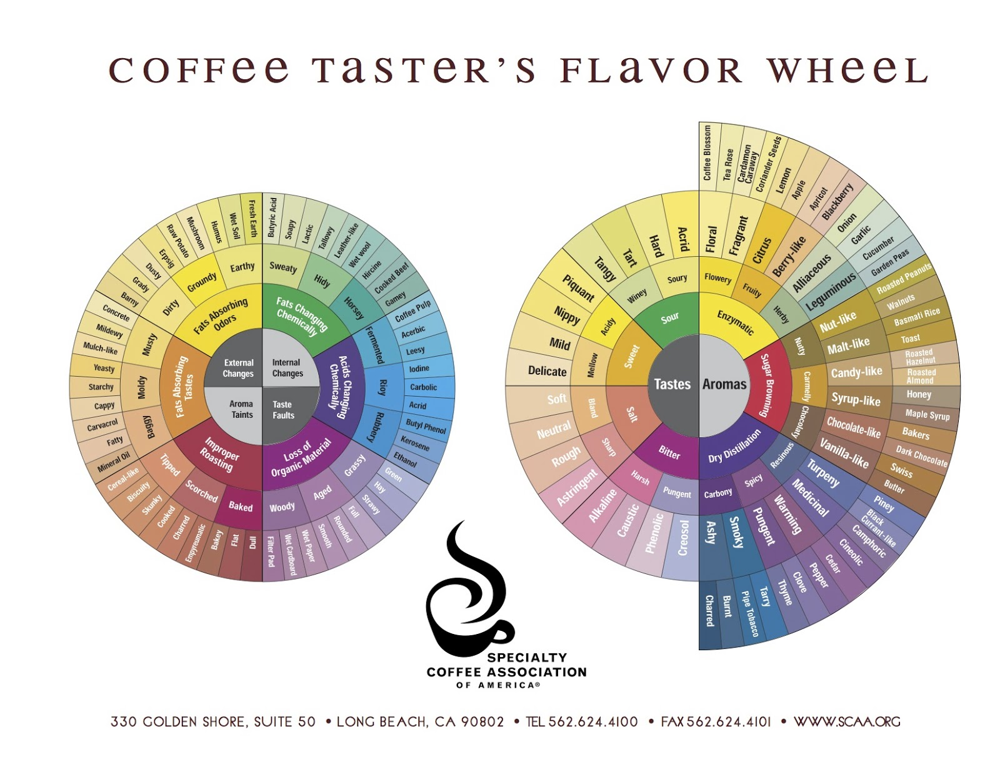

不懂系列之《咖啡精品学（下）》-Chapter 4. 咖啡风味轮新解：气味谱
文章目录
声明1：引文均来自于韩怀宗老师的《咖啡精品学》。 声明2：所有问题的解答均来自于Alice。感谢鲸妞答疑解惑！
风味轮这一章节，纯作为一种风味感知的参考，因彼时的风味轮与此时的风味轮已经不是一个轮。 韩老师的《咖啡精品学》第1版出版于2012年，写作当更早一点。风味轮在当时的模样是有两个轮盘组成（图1）。在2016年SCAA将风味轮调整为一个轮盘（图2）。 因韩老师在第4章和第5章是依据旧版风味轮中正常味谱展开，那就且看旧版轮盘的右轮。
 图1. 早期的咖啡风味轮（SCAA）
 图2. 新版的咖啡风味轮（SCAA）
图2. 新版的咖啡风味轮（SCAA）
1.踏入缤纷多彩的咖啡摩天轮（p81）
咖啡味谱由“气味谱”和“滋味谱”构成，前者指挥发性干香与湿香，后者指水溶性滋味。“气味谱”的香气靠鼻前与鼻后嗅觉来鉴赏，“滋味谱”的液化滋味由味觉来捕捉。
Q. 为什么我在平常品尝咖啡过程中，常常在液化滋味中感觉到“气味谱”中的如巧克力、焦糖等香气/滋味？ 这是不正确的吗？或者说“气味谱”、“滋味谱”是鼻前、鼻后、味觉都能感受或捕捉的？ A. 你的感受是正确的，对的，没有什么是专门谁在哪个阶段才能感受到的，主要还是看烘焙手法
2.三大来源，九大韵味（p83）
生豆经过烘焙，产生诸多气味，彼此互扬互抑，变化万千，包括水果香、焦糖香、奶油香、树脂味、酒气、稻麦香、炖肉香、胡椒味、比萨味和辛香味……很难为咖啡找到一个主味。 A. 浅焙凸显“酵催作用”的“花韵”、“水果韵”、“草本韵” B. 中焙凸显“糖褐变反应”的“坚果韵”、“焦糖韵”、“巧克力韵” C. 深焙凸显“干馏作用”的“树脂韵”、“辛香韵”、“碳烧韵”
Q. 如果用手冲来做深焙豆，或用意式做浅焙豆，是否也能感受到不同的韵味？ 手冲的深焙不应是苦感很强吗？而意式的浅焙豆不应是酸感过高吗？ A. 能；是的。浅焙的做不了esp。
3.浅焙保留花果香气（p84）
浅焙的“气味谱”主要由“酵催作用Enzymatic”的花草水果酸香味，以及梅纳反应初期的谷物味主导。……杯测界所称的“酵催作用”，主要指分子量较低，且具有高度挥发性的花果酸香味与肉桂、青豆等草本芳香味。
Q. OMG，肉桂、青豆，这些是指香气？还是说咖啡的液体能喝出肉桂、青豆味？ A. 是，能
4.浅焙保留花果香气（p84）
1.基本上，发酵时间愈短，酸味愈低，愈易呈现不明亮的闷酸调，但发酵过度则会增加酸败恶味。 2.水洗或干体发酵后，晒干过程的长短，亦影响咖啡的酸味，晒干脱水耗时愈久，发酵程度愈高，糖分会转成酸性物，因此酸味愈重。印尼曼特宁独有的湿刨法，可大幅缩短干燥时间，造就曼特宁低酸闷香的“地域之味”。
Q. 为什么发酵时间愈短愈易呈现闷酸？我理解发酵越短，越不易呈现闷酸。 曼特宁独有的湿刨法是怎样的？这里是在打广告么？ A. 是在打广告。这部分解释起来太复杂，先留着以后上课的时候讲
5.浅焙保留花果香气（p85）
1.花韵：花香与芳香 花香：|咖啡花|茉莉花|茶玫瑰|薰衣草|百香果 芳香：|肉桂|豆蔻|薄荷|茴香|檀香|罗勒|姜 2.水果韵：柑橘与莓果 柑橘：|桔子|柠檬|橘子|苹果|葡萄|凤梨 莓果：|乌梅|蓝莓|草莓|黑醋栗|樱桃|杏桃 3.草本韵：豆类蔬菜与葱蒜 草香：|牧草|甘蔗|药草|仙草|小黄瓜|包心菜|豌豆 葱蒜：|洋葱|大蒜|韭菜|榴莲|芹菜
Q. 为什么茴香这些被归在芳香里？而风味轮里却在辛香Spicy里有丁香、肉桂？ 怎么有效训练香气的记忆？香气瓶靠谱吗？ 什么是仙草味？什么是药草味？ A. 他自己做的归类 不靠谱，需要长期训练，短暂记忆过后就忘记了。咖啡中的花的香气，不需要特别的训练，不会超出我们正常认知太多的。 我也不知道。草本香是有的，这个就有点扯了，可以不管
6.“呋喃”打造焦糖甜香（p89)
过去以为喃是焦糖化的产物，也是中度烘焙焦糖味的主要来源。但近年科学家发觉咖啡香味的生成并不全靠焦糖化，还有许多喃化合物是由脂肪降解，甚至单糖（还原糖）与氨基酸交互作用，也就是赫赫有名的梅纳反应才是生成更丰富喃化合物的主角，因此光靠焦糖化是无法解释咖啡烘焙的造香过程，梅纳反应才是咖啡千香万味的催生婆。
Q. 为什么在p83中，对中烘焙的主角不写成糖褐变反应和梅纳反应？ A. 他自己没叨叨清楚
7.中焙强化坚果焦糖香气（p90）
1.坚果韵：核果与麦芽 核果：|杏仁|花生|胡桃 麦芽：|玉米|稻麦|谷物|烤面包 2.焦糖韵：糖果与糖浆味 糖果：|太妃糖|榛果|甘草 糖浆：|蜂蜜|枫糖 3.巧克力韵：黑巧克力与奶油巧克力 黑巧克力：|苦香巧克力|荷兰巧克力 奶油巧克力：|瑞士巧克力|杏仁巧克力
Q. 奶油巧克力，是不是也可以是黑巧克力和牛奶风味？ A. 不可以，是很大区别。牛奶巧克力是甜的，黑巧是苦的，奶油巧克力很腻。
8.硫醇身世揭秘（p94)
硫醇化物带有巧克力、奶油糖、可可、焦香、蛋香、甚至肉香，是浅、中、深焙咖啡的浓香功臣。另外，还有三个化合物与咖啡香密不可分，包括“4-乙基愈创木酚4-ethlguaiacol”、“烷基吡嗪Alkylpyrazines”以及“异戊烯基硫醇Prenyl mercaptan”.
Q. 此处指出硫醇是浓香功臣，前文又提出呋喃打造迷人焦香p88，到底香气的结构/层次构成是怎样的？是否有个总结？ A. 这些没用，你用不到。